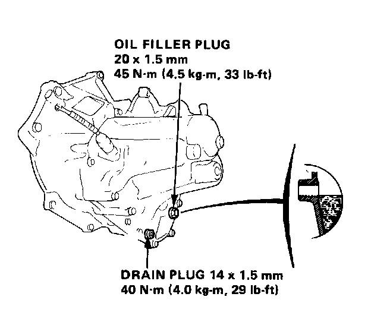

Fill Plug: Testing and Inspection
Maintenance

Oil Level Inspection
1. Check with oil at operating temperature, engine OFF, and car on level ground.
2. Remove oil filler plug and check level with finger.
3. Oil level must be up to fill hole. If it is below hole, add oil until it runs out, then reinstall plug.
Oil Change
Change oil every 48,000 km (30,000 miles). Use only 1OW - 30 or 1OW - 40 weight oil rated SF grade.
1. With transmission oil at operating temperature, engine OFF, and car on level ground, remove drain plug and drain transmission.
2. Reinstall drain plug with new washer, and refill to proper level.
NOTE: Drain plug washer should be replaced at every oil change.
Oil Capacity
2.2 L (2.3 U.S. qt.) after drain.
2.3 L (2.4 U.S. qt.) after overhaul.